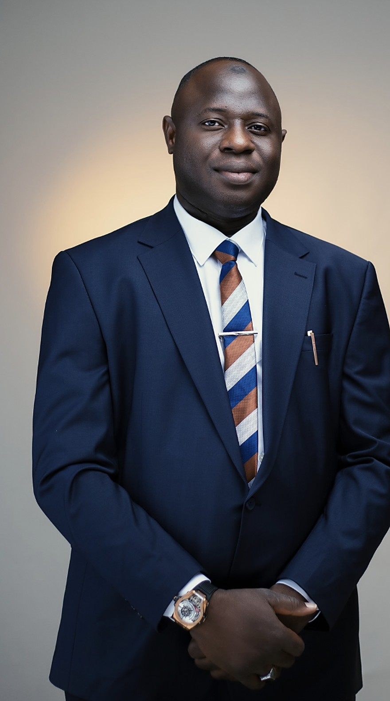

Principal Partner
Yunus Abdulsalam SAN is a Senior Advocate of Nigeria and the founder and Principal Partner of Yunus Abdulsalam SAN & Co.
With more than a decade of robust practice, he is known for dissecting knotty legal issues with precision — across debt recovery, property, litigation, energy law, and constitutional matters.
He has recovered outstanding debts running into hundreds of millions of naira for AMCON — including from a former Niger-Delta governor — and remains a trusted recovery agent for one of the foremost commercial banks in Abuja.
NNPC instruction, 2020. Engaged by the Nigerian National Petroleum Commission to defend a multimillion-dollar suit filed by Zhejiang Pufa Group Building Material Limited.
He writes on law and public affairs — see his articles and press coverage.
Tell us about your matter. We will respond with a clear view of your options and the next steps.
Request a Consultation +234 706 124 1532